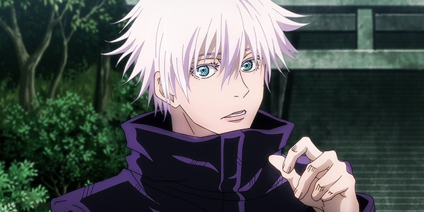
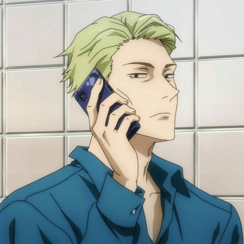

Jujutsu Kaisen, a great read and watch
Can humans win against the curses that are born by them?
There are always people who will criticize new manga coming out as mid for some reasons. JJK is no exception. Nevertheless I got quite hooked to the story, so much so that I devoured 8 bands in just 3 days. To grossly simplify the story it's all about curses that become too strong, and humans trying to reign them in.
Buy Manga View animeSome more characters

A desilusioned ex-salaryman who became a scorcerer to help out people rather than make rich people richer. And he likes bread. What isn't to love.

She escaped a small village to attend the Jujutsu High School in Tokyo. She's into fashion, and loves shopping. She's also strong af.
Best thing is the manga continues running with 22 bands out, and a new season will drop soon on TV as well.